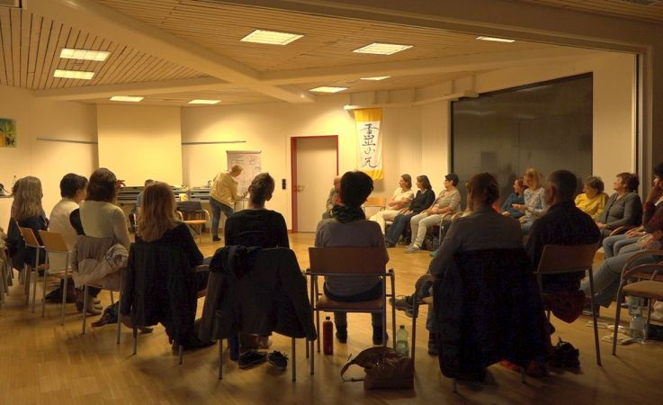

ANGEBOTE
Wie wir zusammen arbeiten können
Drei Formate – ein Ziel: dass du dich wieder ganz bei dir zuhause fühlst. Online, im gesamten DACH-Raum, auf Deutsch und Englisch.

AI GENERATED
Einzelcoaching
Ein geschützter Zweier-Raum, ganz für dich. Wir gehen in deinem Tempo den Themen nach, die gerade wirklich zählen – tief, individuell und begleitet.
✓ Individuelles Tempo, deine Themen
✓ Vertraulicher, geschützter Raum
✓ Online per Video, DE oder EN
„Katharsis-Kreis“ · Gruppencoaching
Ein Programm über 6–8 Wochen für Frauen, die gemeinsam den Weg der Wandlung gehen. Getragen von der Kraft der Gruppe – und doch ganz bei dir.
NÄCHSTE START-TERMINE
15. September · Herbstgruppe (DE)
3. November · Winterkreis (DE/EN)
3. November · Winterkreis (DE/EN)


AI MODIFIED
Speaker & Vorträge
Mein Herzensthema: „Missbrauch als Prozess – von Trauma zu Triumph.“ Ich spreche berührend und ehrlich, buchbar für Firmen, Vereine und Veranstaltungen.
✓ Missbrauch als Prozess – von Trauma zu Triumph
✓ Der Phönix in dir: Katharsis als Weg der Wandlung
✓ Weiblichkeit und Kraft – Führung von innen heraus
✓ Die Weisheit des Tao im modernen Frauenleben
✓ Wenn alte Muster nicht mehr passen: Aufbruch statt Funktionieren
✓ Seelenheilung im Alltag – Beständigkeit statt Erschöpfung
Nicht sicher, was zu dir passt?
Im kostenfreien Erstgespräch finden wir es gemeinsam heraus.
Kostenfreies Erstgespräch buchen